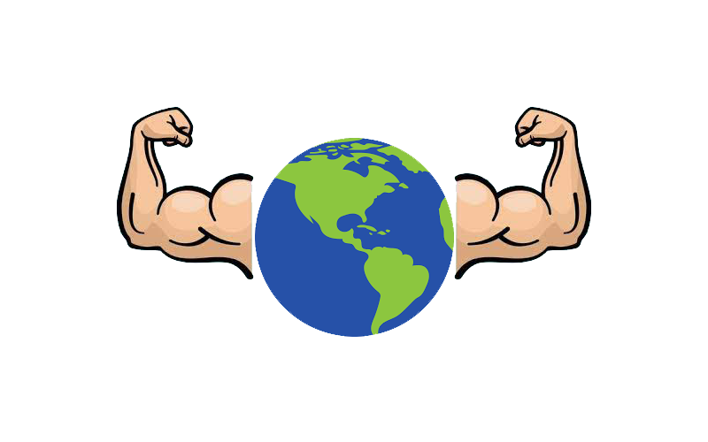

The Earth has many abilities and processes that help keep the Earth and its inhabitants alive. If the Earth had a superpower that could help or possibly eliminate something that harms the planet in general, such as climate change, what would the superpower be? What would the Earth be able to do?
Youth team from different Egyptian cities and towns, And we worked on the challenge remotely.
Climate change is one of the worst catastrophe that the Earth is currently going through, so we thought about what if the Earth had a Superpower that would (naturally) be able to get rid of this phenomenon or at least reduce it without any human intervention - or no problem with some help -.
Forests: The ability of forests to store carbon dioxide is staggering; A single tree can store an average of 48 pounds in one year. Healthy forests can absorb the CO2 emissions of entire countries. For this reason, policymakers and entrepreneurs should develop and implement policies to prevent deforestation, support the reforestation of degraded lands, and promote the sustainable management of existing forests, in the struggle against climate change. More trees means better life on a more sustainable planet.
looks_twoOceans: The ocean plays a fundamental role im mitigating climate change by serving as a major heat and carbon sink. The ocean also bears the brunt of climate change, as evidence be changing in temperature. Currents and sea level rise, all of which affect the health of marine species, nearshore and deep ocean ecosystems. As concerns about climate change increase. The interrelationship between the ocean and climate change increase, the interrelationship between the ocean and climate change must be recognized, understood, and incorporated into government policies.
looks_3Agriculture: Agriculture contributes a significant share of the greenhouse gas (GHG) emissions that are causing climate change – 17% directly through agricultural activities and an additional 7-14% through changes in land use. It is therefore both part of the problem – and potentially an important part of the solution.
looks_4Algae: Algae can be used to fight climate change because it removes carbon dioxide from our atmosphere, stores it as biomass, and replaces it with oxygen. It can be burned as a biofuel to power transportation, which would allow us to lower our use of fossil fuels and, subsequently, our greenhouse gas emissions. When dry algal biomass is burned, it releases more oxygen and less carbon dioxide than our current fuel sources. The increase in oxygen released into the atmosphere not only helps to lower CO2 emissions but increases the overall atmospheric ratio of oxygen to carbon dioxide. It can be burned as a biofuel to power transportation, which would allow us to lower our use of fossil fuels and, subsequently, our greenhouse gas emissions. When dry algal biomass is burned, it releases more oxygen and less carbon dioxide than our current fuel sources. The increase in oxygen released into the atmosphere not only helps to lower CO2 emissions but increases the overall atmospheric ratio of oxygen to carbon dioxide.